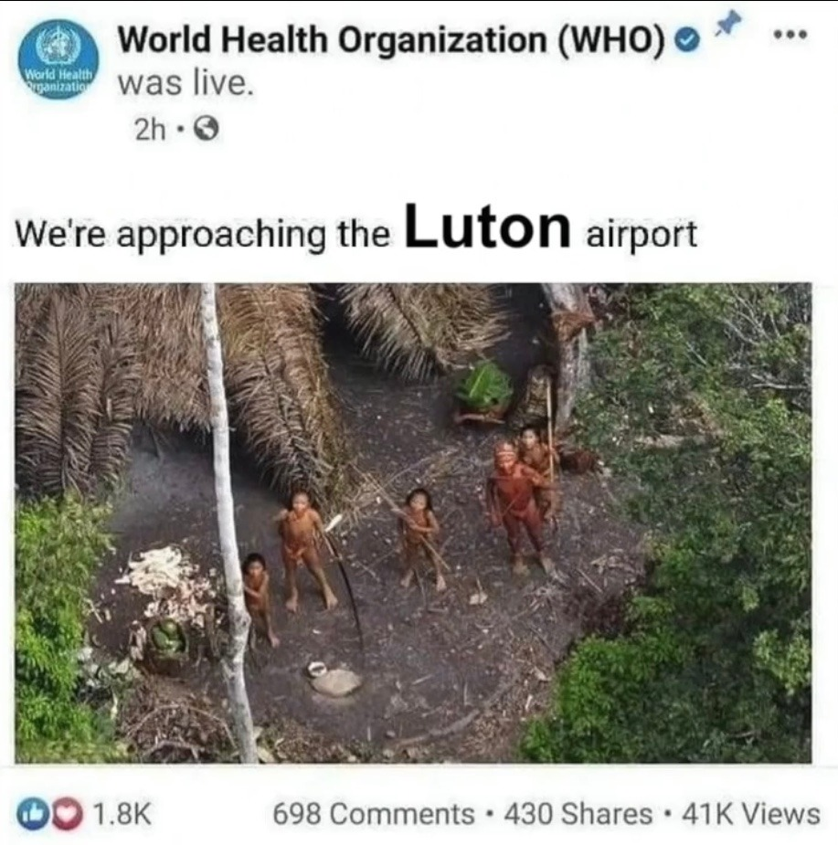
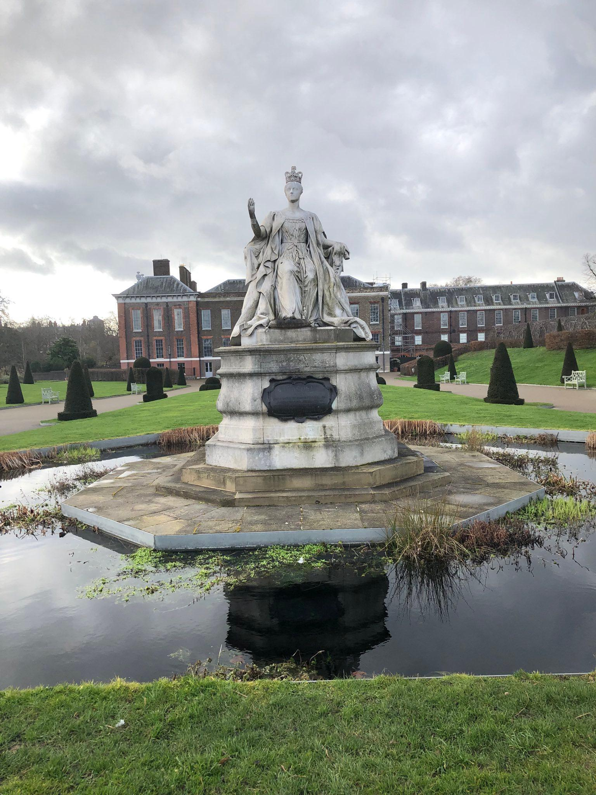
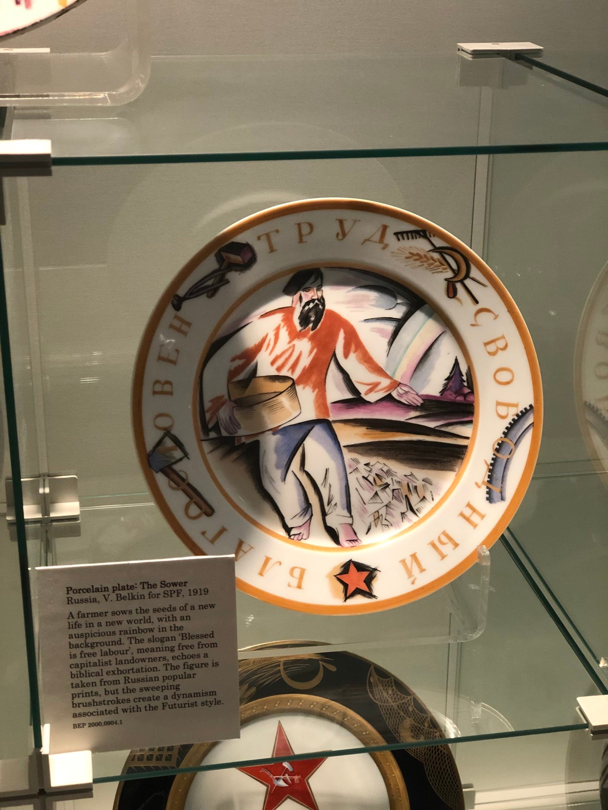
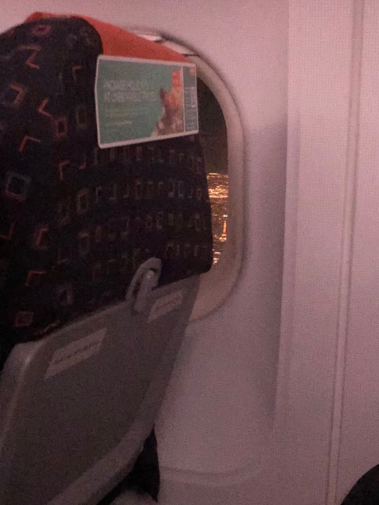

Good day to you!
Weekend-ul trecut am avut plăcerea să vizitez Londra. Drept urmare, postarea asta va conține exagerat de multe poze. Chiar făceam așa, în capul meu, o comparație între ce vizitam acum un an și ceva(Vaslui :))) ), și ce am ocazia să văd acum. Ce pot să spun... Orice destinație are farmecul ei ;;)
Pentru că o poză face cât 1000 de cuvinte, voi atașa câteva dintre locurile/lucrurile care mi-au atras atenția :)
În primul rand:
Urmează și chestii care mi-au plăcut neironic:))


Mi-am adus aminte în această excursie că sunt îndrăgostit de obiectele de propagandă sovietică. Prin urmare nu pot să nu postez și următoarele 2 chestii :))
Trebuie să recunosc, cartierul chinezesc din Londra dă clasă celui din Parigi.

Per total Londra mi s-a parut meh. Probabil din cauza raportululi calitate-preț, care e puțin injust. Nu mi se pare că orașul este o experiență atât de specială încât să justifice prețurile exagerate de care m-am lovit :))
De toute façon, nu-mi pare rău că am fost la «Londres». Așa cum am spus, orașul e frumușel. Dar aș minți dacă aș spune că nu mi-a plăcut să văd asta pe geamul avionului la întoarcere:
Melodia zilei (așa, pe lână subiect :)) )
 ✨
✨Ciao!